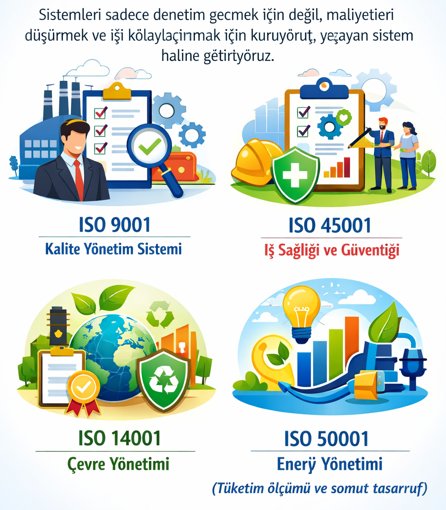
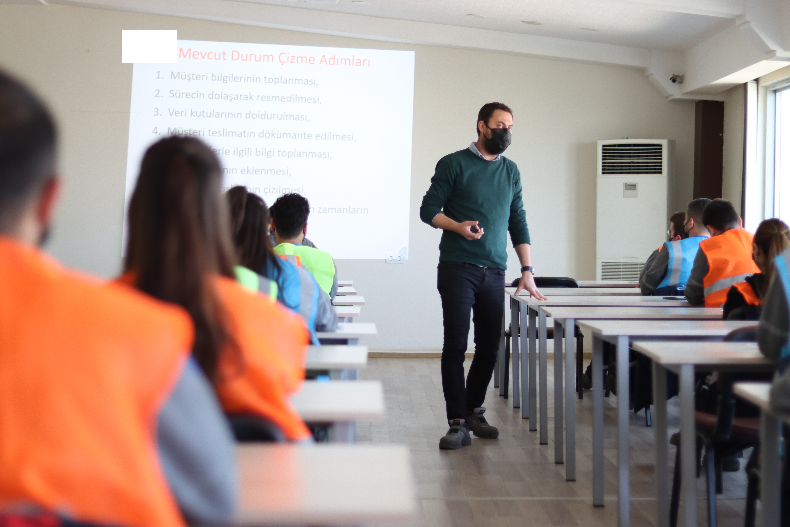

İşletmenizi kişilere bağımlı olmaktan kurtarıp, sisteme bağlı kurumsal bir yapıya dönüştürüyoruz[cite: 44, 46].

Sistemleri sadece denetim geçmek için değil, maliyetleri düşürmek ve işi kolaylaştırmak için kuruyoruz[cite: 53].

Sahadan örneklerle, çalışanlara israfı fark etme ve problem çözme yetkinliği kazandırıyoruz[cite: 91, 95, 99].
ISMETPASA M. BULENT ECEVIT C. 7D/10 59510 - TEKIRDAG
+90 507 126 51 43